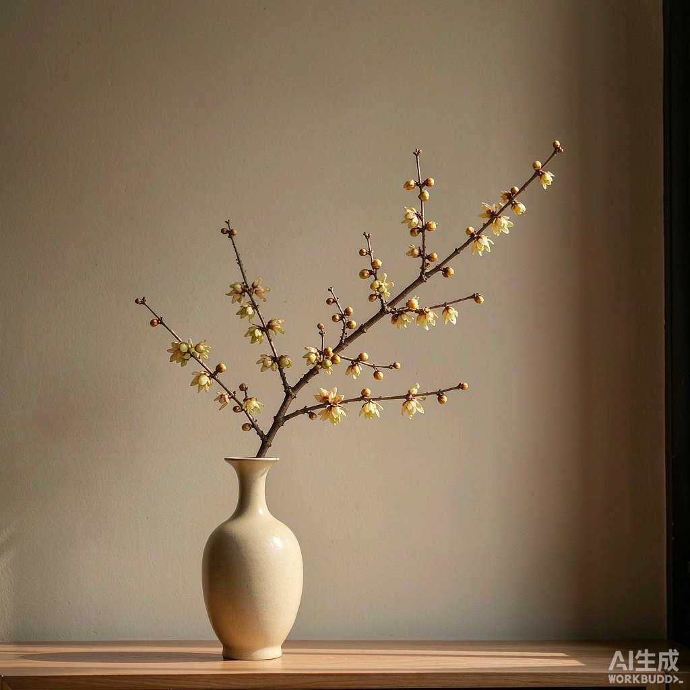

缘起 · 腊梅
先百花而香，历冰雪而开
腊梅（学名 Chimonanthus praecox），非梅之属，却与梅花、水仙、山茶并称“雪中四友”。它于隆冬时节绽放，花瓣呈温润的蜡质黄色，香气清冽悠远，自古便是文人案头与园林庭院的清供佳友。
“众芳摇落独暄妍，占尽风情向小园。”——腊梅之韵，正在于这份不与群芳争艳的孤高。
本站以淡雅之笔，辑录腊梅的品种、习性、养护、典故与诗词，愿您在方寸之间，得见一株腊梅的从容与风骨。
走进腊梅的文化世界 →
墙角数枝梅，凌寒独自开。
遥知不是雪，为有暗香来。
视觉 · 腊梅
一图一境，清供入画
蜡黄缀雪、瓶供清供、庭院老枝，皆是冬日里可驻足的温柔。